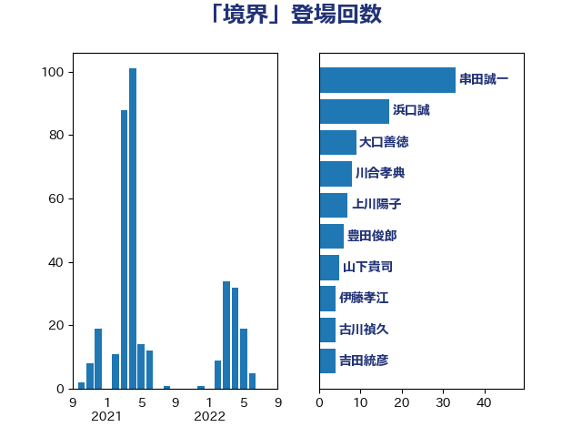

単語「境界」

| 串田誠一 | 日本維新の会 | 33 回 |
| 浜口誠 | 国民民主党 | 17 回 |
| 大口善徳 | 公明党 | 9 回 |
| 川合孝典 | 国民民主党 | 8 回 |
| 上川陽子 | 自由民主党 | 7 回 |
| 豊田俊郎 | 自由民主党 | 6 回 |
| 山下貴司 | 自由民主党 | 5 回 |
| 伊藤孝江 | 公明党 | 4 回 |
| 古川禎久 | 自由民主党 | 4 回 |
| 吉田統彦 | 立憲民主党 | 4 回 |
| 山谷えり子 | 自由民主党 | 4 回 |
| 清水貴之 | 日本維新の会 | 4 回 |
| 小宮山泰子 | 立憲民主党 | 3 回 |
| 浅田均 | 日本維新の会 | 3 回 |
| 輿水恵一 | 公明党 | 3 回 |
| 高橋光男 | 公明党 | 3 回 |
| 吉田はるみ | 立憲民主党 | 2 回 |
| 小島敏文 | 自由民主党 | 2 回 |
| 小林鷹之 | 自由民主党 | 2 回 |
| 岸信夫 | 自由民主党 | 2 回 |
| 川田龍平 | 立憲民主党 | 2 回 |
| 木村次郎 | 自由民主党 | 2 回 |
| 林芳正 | 自由民主党 | 2 回 |
| 石川大我 | 立憲民主党 | 2 回 |
| 長友慎治 | 国民民主党 | 2 回 |
| あかま二郎 | 自由民主党 | 1 回 |
| こやり隆史 | 自由民主党 | 1 回 |
| 三木圭恵 | 日本維新の会 | 1 回 |
| 中山展宏 | 自由民主党 | 1 回 |
| 井原巧 | 自由民主党 | 1 回 |
| 伊藤岳 | 日本共産党 | 1 回 |
| 城井崇 | 立憲民主党 | 1 回 |
| 宮内秀樹 | 自由民主党 | 1 回 |
| 宮崎雅夫 | 自由民主党 | 1 回 |
| 山井和則 | 立憲民主党 | 1 回 |
| 山口壯 | 自由民主党 | 1 回 |
| 山崎誠 | 立憲民主党 | 1 回 |
| 斉藤鉄夫 | 公明党 | 1 回 |
| 新垣邦男 | 立憲民主党 | 1 回 |
| 本田太郎 | 自由民主党 | 1 回 |
| 杉本和巳 | 日本維新の会 | 1 回 |
| 梶山弘志 | 自由民主党 | 1 回 |
| 浦野靖人 | 日本維新の会 | 1 回 |
| 牧原秀樹 | 自由民主党 | 1 回 |
| 田中健 | 国民民主党 | 1 回 |
| 田所嘉徳 | 自由民主党 | 1 回 |
| 石川香織 | 立憲民主党 | 1 回 |
| 美延映夫 | 日本維新の会 | 1 回 |
| 萩生田光一 | 自由民主党 | 1 回 |
| 西村康稔 | 自由民主党 | 1 回 |
| 赤羽一嘉 | 公明党 | 1 回 |
| 重徳和彦 | 立憲民主党 | 1 回 |
| 階猛 | 立憲民主党 | 1 回 |
| 高木啓 | 自由民主党 | 1 回 |
| 高橋千鶴子 | 日本共産党 | 1 回 |
| 高良鉄美 | 無所属 | 1 回 |
| 麻生太郎 | 自由民主党 | 1 回 |